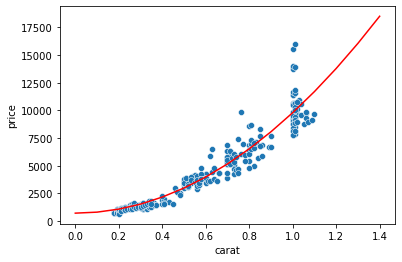
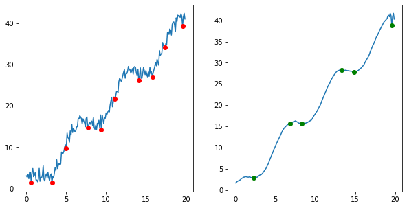
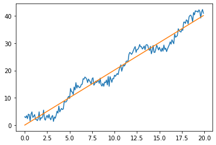
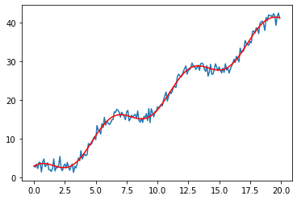

Contents
Use
scipy.optimize.curve_fitto fit now a parabola (with a \(x^2\) term) to the price vs. carat data. Import the data with:
import pandas as pd
diams = pd.read_csv('https://raw.githubusercontent.com/vincentarelbundock/Rdatasets/master/csv/Ecdat/Diamond.csv', index_col=0)
import scipy.optimize
import matplotlib.pyplot as plt
import seaborn as sns
import numpy as np
def myfun(x, a, b):
return a*x**2+ b
popt, _ = scipy.optimize.curve_fit(f=myfun, xdata=diams.carat, ydata=diams.price)
popt
array([9085.54694057, 707.2354052 ])
sns.scatterplot(data=diams, x=diams.carat, y=diams.price);
plt.plot(np.arange(0,1.5,0.1), myfun(np.arange(0,1.5,0.1), *popt), 'r');

You are given the noise data below. Try to find the local minima by first without then with filtering the data with a Wiener filter.
x_vect = np.arange(0,20,0.1)
y_vect = 2*x_vect + 3*np.cos(x_vect) + 1*np.random.randn(len(x_vect))
Using a distance between minima of 15, we recover the true minima after filtering, while before the noise creates many “fake” minima:
import scipy.signal
filterd_y= scipy.signal.wiener(y_vect, 20)
local_min, _ = scipy.signal.find_peaks(-y_vect, distance=15)
local_min_filt, _ = scipy.signal.find_peaks(-filterd_y, distance=15)
fig, ax = plt.subplots(1, 2, figsize=(10,5))
ax[0].plot(x_vect, y_vect)
ax[1].plot(x_vect, filterd_y)
ax[0].plot(x_vect[local_min], y_vect[local_min],'ro')
ax[1].plot(x_vect[local_min_filt], filterd_y[local_min_filt],'go');

Try to do an ordinary least square fit of the signal knowing there’s a
coscomponent:
We first try with a simple linear model:
import statsmodels.api as sm
model = sm.OLS(y_vect, x_vect[:, np.newaxis])
res = model.fit()
res.summary()
| Dep. Variable: | y | R-squared (uncentered): | 0.990 |
|---|---|---|---|
| Model: | OLS | Adj. R-squared (uncentered): | 0.990 |
| Method: | Least Squares | F-statistic: | 1.991e+04 |
| Date: | Sat, 05 Mar 2022 | Prob (F-statistic): | 2.05e-201 |
| Time: | 17:36:57 | Log-Likelihood: | -452.20 |
| No. Observations: | 200 | AIC: | 906.4 |
| Df Residuals: | 199 | BIC: | 909.7 |
| Df Model: | 1 | ||
| Covariance Type: | nonrobust |
| coef | std err | t | P>|t| | [0.025 | 0.975] | |
|---|---|---|---|---|---|---|
| x1 | 2.0181 | 0.014 | 141.088 | 0.000 | 1.990 | 2.046 |
| Omnibus: | 60.764 | Durbin-Watson: | 0.353 |
|---|---|---|---|
| Prob(Omnibus): | 0.000 | Jarque-Bera (JB): | 10.688 |
| Skew: | -0.082 | Prob(JB): | 0.00478 |
| Kurtosis: | 1.879 | Cond. No. | 1.00 |
Notes:
[1] R² is computed without centering (uncentered) since the model does not contain a constant.
[2] Standard Errors assume that the covariance matrix of the errors is correctly specified.
pred_x = res.predict(x_vect)
plt.plot(x_vect, y_vect)
plt.plot(x_vect, pred_x);

Now we add a sin component to the independent variables:
x_new = pd.DataFrame({'lin': x_vect, 'cos': np.cos(x_vect)})
x_new.head(3)
| lin | cos | |
|---|---|---|
| 0 | 0.0 | 1.000000 |
| 1 | 0.1 | 0.995004 |
| 2 | 0.2 | 0.980067 |
Now we do the fit again:
model = sm.OLS(y_vect, x_new)
res = model.fit()
res.summary()
| Dep. Variable: | y | R-squared (uncentered): | 0.998 |
|---|---|---|---|
| Model: | OLS | Adj. R-squared (uncentered): | 0.998 |
| Method: | Least Squares | F-statistic: | 5.940e+04 |
| Date: | Sat, 05 Mar 2022 | Prob (F-statistic): | 7.79e-276 |
| Time: | 17:37:01 | Log-Likelihood: | -273.88 |
| No. Observations: | 200 | AIC: | 551.8 |
| Df Residuals: | 198 | BIC: | 558.4 |
| Df Model: | 2 | ||
| Covariance Type: | nonrobust |
| coef | std err | t | P>|t| | [0.025 | 0.975] | |
|---|---|---|---|---|---|---|
| lin | 1.9987 | 0.006 | 338.079 | 0.000 | 1.987 | 2.010 |
| cos | 2.9770 | 0.095 | 31.303 | 0.000 | 2.789 | 3.165 |
| Omnibus: | 0.593 | Durbin-Watson: | 2.050 |
|---|---|---|---|
| Prob(Omnibus): | 0.744 | Jarque-Bera (JB): | 0.724 |
| Skew: | 0.073 | Prob(JB): | 0.696 |
| Kurtosis: | 2.744 | Cond. No. | 16.2 |
Notes:
[1] R² is computed without centering (uncentered) since the model does not contain a constant.
[2] Standard Errors assume that the covariance matrix of the errors is correctly specified.
pred_x = res.predict(x_new)
plt.plot(x_vect, y_vect)
plt.plot(x_vect, pred_x, 'r');
